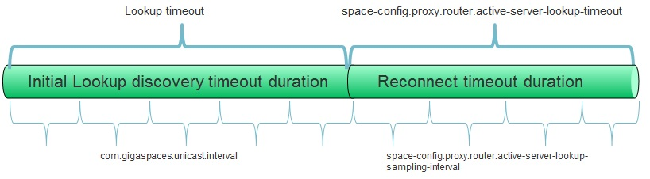

When a client connects to a data grid, the initial connection is actually a connection to a single member in the data grid, which is usually composed of multiple members (additional partitions, primary members vs. backup members, etc). That connection is implicitly wrapped in a proxy which implements the data grid API (write/read/take/etc), and contains an internal component called Space Proxy Router which communicates the executed operations from the proxy to the entire data grid.

Generally speaking, the space proxy router is transparent to the data grid user. That said, understanding how a system works under the hood can help analyzing and solving problems.
The space proxy router has the following responsibilities:
The space proxy router behavior is controlled using the following configuration properties, which can be specified as part of the Space Component or via API:
| Property name | Description | Default |
|---|---|---|
| space-config.proxy.router.active-server-lookup-timeout | If an operation cannot be executed because the target member is not available, the maximum time (in milliseconds) the router is allowed to wait while searching for an active member. | 20000 |
| space-config.proxy.router.active-server-lookup-sampling-interval | The interval (in milliseconds) between active member lookup samples. | 100 |
| space-config.proxy.router.threadpool-size | Number of threads in the dedicated thread pool used by the space proxy router | 2 * number of cores |
| space-config.proxy.router.load-balancer-type | Load balancer type to be used by the router for active-active topologies (STICKY or ROUND_ROBIN) | STICKY |
In most scenarios the goal is for all proxies to be configured with the same settings. This is provided out of the box by configuring the proxy settings as part of the space deployment - clients that connect to the space automatically retrieve the space proxy settings and use them. If a specific client needs a different configuration, it can override the configuration locally without affecting the space or other clients.
Example: To increase the lookup duration timeout to 5 minutes you should have the following:
<os-core:space-proxy id="space" space-name="mySpace">
<os-core:properties>
<props>
<prop key="space-config.proxy.router.active-server-lookup-timeout">300000</prop>
</props>
</os-core:properties>
</os-core:space-proxy>
<bean id="space" class="org.openspaces.core.space.SpaceProxyFactoryBean">
<property name="name" value="mySpace" />
<property name="properties">
<props>
<prop key="space-config.proxy.router.active-server-lookup-timeout">300000</prop>
</props>
</property>
</bean>
<os-core:giga-space id="gigaSpace" space="space"/>
SpaceProxyConfigurer configurer = new SpaceProxyConfigurer("space").
addProperty("space-config.proxy.router.active-server-lookup-timeout", String.valueOf(1000*60*5));
GigaSpace space = new GigaSpaceConfigurer(configurer).gigaSpace();
When the space resides in the same process as the client (a.k.a. embedded space), communication disruptions are impossible since no network is involved. However, when the space resides in a different process, communication between the client and the space may be disrupted for various reasons (machine was restarted or disconnected, space was shut down, processing unit was relocated, etc.). In such cases the space proxy router initiates an active server lookup procedure, in which all the potential servers are sampled concurrently until an available active server is discovered. If the active server lookup procedure exceeds the predefined timeout and no active server was found, the operation will be terminated and an exception will be thrown. The active server lookup timeout can be configured using the space-config.proxy.router.active-server-lookup-timeout property.
A single remote space is treated as a clustered space with a single member.
You can optimize failure detection. When searching for an active server the default interval between samples is 100 milliseconds. If your system demands shorter failure detection, the sampling interval can be configured using the space-config.proxy.router.active-server-lookup-sampling-interval property (see Configuration). Note: This settings does not affect the failover duration (i.e. how long it takes for a backup space to become primary), it only affects how long it takes for a space proxy to discover the new primary space. For more information refer to Failure Detection.
A partitioned space is treated as a combination of routers (one per partition), so in fact connectivity management is encapsulated per partition as explained above.
When executing a batch operation (write multiple, read multiple, etc.) on a partition cluster, if one or more partitions are not available, a partial failure exception will be thrown according to the operation (e.g. WriteMultipleException for write multiple), detailing which part of the operation was successful and which was not.
When executing blocking operations (such as read/take operation with a timeout > 0 or Polling Container), keep in mind that the operation's timeout argument determines the maximum time to wait for a matching entry in the space, whereas the space proxy configuration active-server-lookup-timeout determines the maximum time to wait for an active server. These timeouts are separate and do not affect each other. Moreover, if a failover occurs while the operation is blocked on a server, it will be re-invoked on the new active server with the original timeout, ignoring the amount of time the client already spent waiting for a matching object before the client was disconnected.
If communication is disrupted during the notification registration process, it is handled in the same manner as the other operations (i.e. proxy automatically looks for an active space up to the configured timeout). However, if communication is disrupted afterwards, other mechanisms are needed to ensure communication is restored and events are not lost. For more information refer to Notify Container and Session Based Messaging API.
When using Client side caching, the connection management is different because cache staleness needs to be considered as well. For information refer to Local Cache or Local View.
The space proxy router uses the Lookup Service to locate data grid members. The lookup service uses either multicast or unicast discovery (default is multicast). When a unicast lookup service is restarted, the space proxy will automatically re-discover after a while. If you need to better understand that process and fine-tune it, refer to Discovery Intervals.
In active-passive (a.k.a. primary-backup) topologies there's never more than a single cluster member which can serve the request, so there's no need for a load balancer. In active-active (fully replicated) topologies, all the cluster members are identical replicas of the data, which means the proxy can use a load balancer to choose which cluster member will serve the operation.
There are two types of load balancers supported by the proxy:
Configuring the load balancer type is done using the space-config.proxy.router.load-balancer-type space property.
In general, the change can be summarized as follows: instead of "On failure, retry the operation up to 10 times with 2 seconds sleep between retries", we have "On failure, wait up to 20 seconds until an active space comes up, and sample all potential spaces each 100 milliseconds".
When a client fails to execute an operation due to a network problem, it can't tell whether the problem is a short disconnection (which means it should retry on the same space) or long disconnection (which means the backup will soon become primary, so the proxy should switch to it). The old router used a complicated algorithm with complex heuristics trying to guess which space is most likely to succeed in the next operation, and try to execute the operation on it. If the guess was wrong, it analyzed the exception to figure out what to do next. This approach led to complicated and unpredictable behavior which is very hard for users to understand and configure properly, and on top of that is not very efficient.
The new router uses a much simpler strategy: when a network problem occurs, it starts sampling all the potential spaces (usually there are no more than two: primary and backup) to determine which one is active. The sampling is done concurrently using multiple threads. If the problem is a short disconnection the primary member will respond shortly, and the operation will be executed on it. If it's a long disconnection the active election process will select a new primary, which the router will detect soon after, and execute the operation on. This approach is more efficient, predictable, and easier for users to understand and configure.
All the old properties/settings used to configure number of retries and interval between retries are ignored in the new router. If those settings are customized in your system and you're upgrading to 9.0.1, you should figure out what timeout you want and use the new space properties to set it.
The old router supported complex configuration allowing users to define custom load balance and routing strategies per operation. The new router ignores all that configuration - when using partitioned data grid routing is always done according to a hash-based policy applied to the routing property.